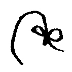

Cuando acuestes la cabeza / Coraje
mascota de la guarda
dulce compañia
no me desampares
ni de noche, ni de día
ni a la hora de mi muerte
wuf! wuf!
dulce compañia
no me desampares
ni de noche, ni de día
ni a la hora de mi muerte
wuf! wuf!

Me encontre con vos bajando las escaleras. Dimos vueltas un rato. De las orillas a las paredes. Esto era un sueño. Te estaba contando. Se encontraron y estaban jugando un juego. Bajando de una torre pintada de rosa por donde estaba el colegio. Él hacia un chiste y ella hacia otro. Primero ella no entendia y despues él no entendia. —Me re gustas enrealidad—.
La chica habia aprendido lenguage de silbido. Le iba hablando a su perro. El Capitan Luisito era el mas fiel de los acompañantes. Un alma gemela. Su dueña era Azul. Caminaron hasta frenar bajo un farol que se prendia y se apagaba. Se prendia y se volvia a apagar. Al rato empezaba a titilar y Azul gritaba —Dale que vuelve Luigi!— La caminata se fue alejando de las luces mientras subian la colina que llegaba al puente. Otra colina mas y estaba la casa. —Casa querida, donde estabas que no te veia? Puede ser que seas la casa mas linda que me pudo haber tocado?— Era de noche y verano. Luisito la habia seguido de lejos en el supermercado. Habian dejado la radio prendida y las persianas abiertas. Estaba por largarse la tormenta de Santa Rosa. Por suerte habian dejado una nota en la mesa y otra en la heladera con una flecha a la mesa. Que decia así. LUIS-YA-ZUL DEJO LAS LUCES PRENDIDAS. FUE A COMPRAR ALGO Y DESPUES VOLVIA. PERO QUIEN SABE!!!
Un sapo se asomó por la laguna. Salió del agua y se puso a cantar bajo la luna. Luis y Azul lo saludaron. Azul hizo como que se sacaba el sombrero. —Vos que pensas Luis, que vino primero el fósforo o EL FUEGO!?— Le dijo a Luis que venia escuhando a la mitad. Creyó que estaba empezando a entender el chiste. Que chiste? El chiste era que Azul queria prender todo fuego. Fuego esto, fuego aquello, fuego la casa, fuego rompiendo los vidrios de las ventanas... Los dos llegaron agotados, se subieron a la cama y se quedaron dormidos. Sobre el chispero de la chimenea dejaron el collar de Luis y el buzo de Azul que venian empapados. El collar tenía (tiene) un número de teléfono raspado contra el metal y una simple insignia que decía EL CAPITAN.
La tormenta había desaparecido. La casa era un hotel y su cuarto la suit presidencial. Esto era un sueño. A los pies de la cama Luis había preparado una mesita con el desayuno. Se cruzaron los pies y se pusieron a comer. Frente a frente tocandose las rodillas. Unas tostadas y un café. Su pijama augereado lo iba a llevar en la mochila. Esto era una despedida. Azul se estaba enterando. Vió al lado de la puerta una maleta y se puso a llorar. Afuera se formó un remolino. El viento sopló tan fuerte que voló el techo por los cielos. Lo arrancó como una lata de sardinas con un final desprolijo. Corrieron los dos cuesta abajo esquivando rayos. Corrieron por sus vidas. Fueron a encontrarse con su amigo faról. Azul le quería hacer una pregunta. Para responder solo necesitaría su lamparita. Un titileo significaría si y dos no. Necesitarían un regalo a cambio de su saviduría. Se levantó Azul de la cama. Ya habia amanecido. Agarró su cartuchera y escribio una carta sobre la mesa de la cocina. Era para su tío.
Querido Dante,
hoy. como todas las otras veces. me he afeitado. muchos diran que es porque tendre compañia. pero digales. para que no me descubran. si se tratase de quedarme! eso preferiría. aunque sea hasta que empiecen las clases o hasta cuando digas.
Anteriormente, la casa de las paredes celestes tenia como cuidador y principal habitante a un anciano con el nombre de Otto. Otto y Luis con su balde de metal por siempre. Juntando ramitas para la chimenea. Un día de verano a Luis le habia ganado la curiosidad y se encontró en un pastisal rodeado de serpientes. Otto estaba cantando mientras barría la galería. Había tirado una maseta contra el piso. —Uh! Que macana! Uh! Que te vayas!— Desde la galería escuchó un ladrido distintivo. Bajó desesperado en espíritu de rescate. Se asomó Luis al camino de tierra y le mostró a Otto como venia corriendo con una patita. Otto lo alzó en sus brazos y fue corriendo al pueblo. En algun lado del pueblo estaba la veterinaria. Se le escapó una lagrima a Luis que venia cerrando los ojos. Otto había corrido descalso. Habia salido en patas sin mirar para atrás a la casa ni nada.
Se les hacia de noche y empezaría a llover. Llegaron justo cuando se iba la veterinaria. Saco de la heladera una caja de tergopol y de esa caja suero, aguja y algodón. Unos masajes sobre su mano mordida y una injección.
Se levanto Luis con una curita. Se trató de parar sobre la mesada metalica hasta que lo frenó Otto con un poco de agua para su boca seca. —La doctora te acaba de salvar la vida Luis, fue a comprar algo para comer y después volvia—. Otto acarició al saquito de papas y salió afuera a fumar un cigarillo. Golpeando la cajita sintio que el pecho le ardía. Lo atravesó un nervio que lo dejó inmovil. Se fue agachando agarrandose de la pared hasta caer sentado. Se formó una cortina de gotitas que daba la vuelta a la galería de la veterinaria. Se asomó Luis desde su camilla hasta caer contra el piso y se quedó a su lado. Se despidieron por ultima vez antes de que Otto muriera de un infarto. Lo consoló con una sonrisa y dijo —Que boludes fumar Luisito—.
Traicionado por su propio cuerpo y enterrado bajo un árbol muy cerca del camino. Fue visitado por la nueva inquilina y por Luis que le dejaban flores. Azul habia sacado de todos sus bolsillso todo lo que hubiese dentro y lo habia pegado a una de sus libretas con cinta de papel. Dejó la libreta, que parecia una momia, a los pies del farol y pidio un deseo. Puede ser que cuando cerró los ojos haya pedido por la paz que en esa casa habian compartido. La verdad es que nunca lo sabremos. Hoy en día Azul es un tanto reservada y parece que con nadie se habla mas que con Luisito.
Llenaron su balde de ramitas y subieron. Venia Luis escuchando a Azul cantar. Cantaba unas cosas en brasilero. Que el viento se iba llevando a una pluma que era la felicidad, que la tristeza no tenia fin y que esto era lo opuesto. Pasaron por la laguna y comieron fideos. Fueron al cuarto de Otto que seguia intacto. Al fondo del pasillo con olor a encierro. Una pila de cajas llegaba a la altura de los ojos de Azul, decia RECUERDOS. Luisito volvio para la cocina. La heladera transformaba agua en cubitos de hielo. Preferia dejar eso para otro momento, a veces su corazon se incomodaba. Azul sacó de la caja un vestido y decidio ponerselo. Sobre la cama dejó la caja, abrió las ventanas y le dejó lugar al viento. Una tira sobre cada una de sus claviculas. Se miró al espejo. El vestido le encantaba, la inspiro a cortarse el pelo. Fondo rojo, flores blancas. Fue a mostrarle a Luis que la esperaba bajo la amaca. Le mostro a Luis lo que se habia puesto. Bostesó Luis. Bostesaron los dos y a la amaca se subieron.
Se quedaron mirando el techo un rato. Escuchando las chicarras desde la galeria mientras aterdecia. Azul pasó la lengua por sus dientes que no se cepillaba hace dias. Estaba acostumbrandose a formar parte del paisaje. A que todo lo que tocase se hiciera cenizas.
Vieron a lo lejos luces rojas y blancas avanzando en fila. Prendiendo y apagandose antes de desaparecer. Dando vueltas en el pueblo y alejandose por la ruta. Luis levanto una oreja y escuchó a Azul que leia de su nueva libreta. Cosas para no mostrar ni terminar. Para nadie mas que Luisito a quien le hacia cosquillas la nariz. —Achiz!—
SE BUSCA
inflé mi pecho de paloma
caí de la cuerda floja
partiendose mi cortesa en dos
la tierra es hueca!
llena de canaletas y lagrimas
de zapatos sacudidos
preparando para dos la mesa
dos platos, cubiertos y comida
tambien un cuento para que te puedas dormir
inflé mi pecho de paloma
caí de la cuerda floja
partiendose mi cortesa en dos
la tierra es hueca!
llena de canaletas y lagrimas
de zapatos sacudidos
preparando para dos la mesa
dos platos, cubiertos y comida
tambien un cuento para que te puedas dormir
Sobre la mesa de la cocina habian dejado su lampara prendida. Amacados por Azul que mantenia una de sus patas hundida. Cuando ellos fueron la amaca habia vuelto. Fueron tripulantes de un barco. Mirando para arriba por sus agujeritos. A las estrellas las tapó la tormenta que tomó devuelta fuerza y se avalanzó contra los arboles. Se tumbó contra los nidos de sus amigos pajaritos. De un portaso se cerró el pasillo. Bajó del cielo prendido fuego un rayo que buscaba sembrarse. Necesitaria de algo o alguien.
Azul y Luis se miraron las caras hasta que solo quedaron sus ojos. El resto era parte de la marea. Sobre la cara de Luis se reacomodaron trazos de tela. Azul trató de mirarlos para acordarse. Pero mirarlos deshacía el hechizo. Era parte del juego. Hacer trampa no servia de nada. Mientras no se concentraran la cara de Luis era humana.
Azul le pidio que le hable —aca y ahora!!!— pero Luis no dijo nada. Los agarró el rayo con la palma de su mano. Era la mano de un gigante. Los levantó para poderlos ver y hablarles. El mar a su izquierda y a la derecha la cordillera. Se partió el cielo como una cubera de hielo. Podrian haber visto a su tío que venia en camino. Se acomodaria en la fila y todas las luces lo seguirian a él. Los levanto el gigante y les dijo —todo lo que ven esta hecho de lo que digo—. Mientras les hablaba veian el mundo que construian sus palabras. Vieron la ventana de la cocina con la luz prendida y se sentaron en su techo con forma de “V.” Le dieron la espalda a la luna y una capa de cenizas recubrió todo lo que habia a la vista. Se levantaron paredes y se mantuvieron en silencio. Habian cabado su tumba. Darian el primer paso fuera de su bola de cristal. Adentro todo seguia siendo parte del mismo momento. De no haber decidido. Enmarcados dentro de una foto sobre un estante. Mirandolos desde las nubes. Les habla su amigo rayo. Debajo me espera Azul y Luisito. Solo tengo que bajar por el tobogan pero todavia no me animo. Los espero. Bajo prendido fuego y les doy tiempo para que pidan su deseo. Despues les digo que si.
La mano fue su huesped que los llevo a upa dormidos. Los dejo a la orilla de la laguna. Se despertaron y esperaron bajo la sombra de un arbol con sus patas camufladas de barro.
Paso un auto que los dejo bajo una humareda de polvo. Iba para la casa asique ellos tambien subieron. Llegó a su casa en un ford moneo rural con los papeles desactualizados. El título estaba a nombre de una tal Rosa Gonzales de Córdoba y no a nombre suyo, Dante. Ahora estacionaba sobre las piedritas al lado del limosnero. Se puso a bajar bolsas y abrió el baúl. Sacó del baúl un cencerro y empezó a colgarlo. Lo colgó de una viga de la galeria con una cadena y ayuda de un alambre. Los dos venian corriendo. Fue a encontrarselos en el pasto. Luisito no paraba de temblar y languetearlo. Alsó en brazos a su sobrina que se habia transformado en perro. Tenia pulgas y mal aliento. La miro a los ojos y le habló como si fuera un pajarito. —piu-ti-ui?—

Las preguntas? Miles. Que voy a comer? Donde? Ese olor, soy yo? Se apagaron las luces en el colectivo. Mire mi reloj y todo lo que pude ver era tiempo no estando ahi, en la capital. La gran ciudad, los Big Boliches. Ya era hora. Dormiría en lo de mi abuela Esperanzita con quien tan bien me llevo. Solo unos dias para celebrar y dejar un poco atras toda esta farsa. El colegio? una mentira. El celular? no es la vida real. El punk? muerto. La cafeina habia sido mi unica alegria y ya nos estabamos separando. Las luces del colectivo se volvieron a prender. Todavia no me tocaba. Eran las 22:51 cuando me bajé. Una buena señal. El “22” es el loco y “51” es la mitad de cien mas uno. Este capitulo del año se llamaba “el gran descanso.”
Hola, me llamo Sebastian Sosa Valdes. Tengo once años y cien bajo las mangas. Estoy en el ultimo día de colegio. Está por tocar el ultimo timbre y en el pizarrón deje un dibujo del colegio (tiza blanca sobre fondo verde). Bastante bien me salió. Lo miro una vez mas para acordarmelo siempre. Hay arbustitos bajo las ventanas. Se parece a casa. Ahora voy a volver a casa y se va a haber ido. Mama a chile y papa al cine. Con mi hermano estabamos escribiendo una historia de las hormigas gigantes que nos acompañan en la casa. En el cuentito yo tengo un nombre inventado que significa “hormiga” y él tiene otro que significa “gigantes.” Te dejé un regalo antes de irme hermanito. Se lo dejé en su nuevo cuarto. Uno de sus dibujos enmarcado sobre su mesita de luz. Un robot dinosaurio rojo. Partido en mil pedasos por su profe de grado y restaurado por mi, Seba. Con cinta y dedicación. Papeles escritos son objetos favoritos, no se rompen ni se tiran ni ocupan lugar.
Querido hermanito, Creo. Espero! que este verano dure para siempre. Que encuentres en vos la calma. En vos hay un laberinto entero con tesoros que podes ir coleccionando. Pero que no te confundas. Si te sentis solo el mejor de todos los tesoros esta en tu risa y cuando te quedas llorando. No va a pasar mucho hasta que nos veamos. Y lo que sea que necesites me vas preguntando. No es tan complicado el mundo de los ansianos. Es tan complicado como ellos lo quieren ver. No dejes que se pudran!!!
Cualquiera pudo haber sido el momento. Cualquiera puede ser en realida. Y no hay que estar enojado. Ni quedarse dormido. Ni avalanzarse antes. Tener los ojos bien abiertos y los pies sobre el piso que en este momento es de cemento. Tomé un café y salí del colegio sin nada que comer, solo para fumar tabaco del imaginario y un encendedor tambien de los imaginarios. Paf! Paf! en la parada. Clank! Clank! Hacia la ventana de la clase mientras miraba para afuera por ultima vez. Estaba pensando que, nada, TODO TIENE QUE IMPORTAR. Todo seguro significa algo... Queria escribir todo lo que iba pasando en el viaje y vamos a ver como sale. Ahora estoy parado anotando en un papel todo lo que pasó antes. Me gustaría que fuese escribir todo lo que va pasando. Pero tiene que pasar primero y despues haber un descanso. Cuando me voy acordando te puedo ir contando y vemos. Sino ya no van quedando cosas que contar sino cosas que voy pensando. Como por ejemplo estaba pensando... ¿Que tiene que ver... la atracción de dos imanes... con! que los niños actores sean los unicos niños que pueden no ir al colegio? Veo muchas manos. Sé que hablando va a ir saliendo la respuesta. Hablar es saludable. Excepto si estas jugando a la sardina. Ahí mejor callarte. Antes de morirme pensando! Para afuera! (como diría Ernesto). Como este viaje. Pensá que de ahora en mas todo va a estar mejor. Mientras no quieras nada y estes entragado a todo lo que pase. Solo necesito encontrar algo que ofrecerle al mundo a cambio de plata.
Algo que ofrecer... iba en el colectivo pensando... Desde algun edificio me podrias haber visto llegar. —Una de esas luces es Seba que nos debe estar saludando!— Pero me distraje. Estaba pensando... Que tengo para ofrecer gratis? Me enrosqué. Pense que seguro estaba roto, que solo aprendo despues de estar equivocado. Que solo sé cuando era para ayer. Pero no debería meterme mucho en personaje. Por algo vendras tardando tanto. No suenes como un mal agradecido que no le puede pedir nada a nadie.
Sentí que “el gran descanso” era un título apropiado. Correcto o adecuado. Ese título si que se porta bien. Tiene modales por lo menos cuando lo estan mirando. Pero hay algo que le anda faltando. Coraje! —CORAJE!!!— grite en la calle. Me bajé del colectivo y habian dos ansianos discutiendo. Me acuerdo como si hubiese pasado hace quince minutos. Como si fuese a camuflarme detrás de mi pijama de Bux Bunny. Me les quede mirando. —Te descansaron Augusto! Te durmieron! Te vieron la cara de rata y perdiste plata— Augusto por otro lado no parecia preocupado, y bueno, que le iba a hacer. Asi que me senti identificado. Augusto! ese era yo. Mi nuevo nombre. Me habian descansado y ahora habria de girad la mesa tan solo unos 180 grados. Era mi turno. El niño de las poesias. Era de noche y verano. El supermercado estaba cerrando y les dije que el alchol era para mi padre. Que si no tenia su documento para mostrarles.
Me senté en la entrada de tu edificio Ernesto. El timbre no contestaste. Ernesto no estaba y me senté frente a la moto entre los dos arboles. Subian de la vereda a tu ventana pero eso no me servía de nada. Fui a la plaza a buscarte y en el camino iba pensando. Eso estaba pensando!!! Te juego un ahorcado. Uuu con que letra empieza? Uuu ya no te puedo decir. Que era entonces? Se escucha? Tierra llamando a Sebas. Por suerte nos acordamos. Los niños actores no son los unicos que andan trabajando. Tampoco pueden salir volando y olvidarse de sus horarios. Anclados al papel que les den los ansianos. Al mismo tiempo los mantiene parados sobre la tierra la gravedad. Que mas tiene gravedad te estarás preguntando?! LOS IMANES!!! Acá en donde estamos parados. Piedra hecha cemento que seguro significa algo. Y vos que pensabas que el arbolito de navidad era magico.
Llegue a unas cuadras de la plaza y frené sobre una canaleta llena de agua. Saque algo que brillaba. Hundido en el agua habia una foto. Del otro lado tenia escrito el año de mi nacimiento. Dos ansianos en blanco y negro. Que cosa papá. A veces las fotos me hacen llorar. Y esta cumplio su objetivo. Y llegue al otro lado de la plaza y vi a la chica de la que tanto te hablaba. La ví, grite su nombre y me avalancé antes.
Me levanté de noche en un hospital. A mi izquierda estaba Ernesto dormido. —Psss! Ernesto!— Como esta mi cuerpo pense?! Me fije si tenia puesto un calsonsillo. Por suerte sí pero traté de seguir ahí pero se volvio todo un sueño. Bajaba de un río borracho. Para frenar solo tenia que afirmarme sobre mis manos o abrir los ojos. Y cuando abrí los ojos. Estaba la chica y un par de sus amigas y en el pasillo discutian todos sus padres. Asique le dije a Ernesto. —Ernesto, se que seguro venis de salvarme la vida pero puedo pedirte un favor mas? Me dejas a solas con Marina? Le dije a su amiga Camila que fuera por mas morfina y a Juana que trajiera un bidon de 6 litros de agua. Parecia todo tan real! Qué hubiera apostado! Si eso era un sueño chau para siempre la vida! Chau estar despierto. Tu piel parecia alumbrada por una vela. En una alfombra sobrevolando la ciudad y devuelta a mi cuarto y mi cama. No veo con que dormirme hasta que se haga de día. Todo habia sido un sueño y en realidad hablé con vos por teléfono. Un auto se las habia agarrado con mis costillas y yo decidí cruzar justo a tiempo para que se puedan encontrar.
Muy corta la conversación. Seremos algo algun día. Pero bueno. Mientras tanto por teléfono decidí que de lo mejor que podía hablarte era de imanes. Te dije y ahora me acuerdo. Que vergüenza. —La gravedad esta explicada con imanes! y los niños actores son los unicos que pueden actuar de niños. Una cosa explica a la otra. Va girando en espiral la explicación del mundo!!!— Me dijiste que te parecia una lastima. Que si asi era el mundo necesitaba parar de girar un segundo y darle tiempo a todo el resto para que se pusiesen al día. Necesitariamos todos tambien un punto de partida y una jabalina de cobre clabada en la tierra por cualquiera que se le ocurriera tocar los enchufes.
Eso del final no te habia entendido. Para nada. Pensé en buscar alguna tercer cosa para completar los parecidos. Pero acá vengo un poco distraido. Estas son las ultimas noticias. Sobre algunos rincones en este cuarto de hospital estan empezando a aparecer. Se abren y se cierran ojos huerfanos. Se camuflan desde mi punto de vista. Aparecen sin su pareja y solo puedo notarlos por un segundo. Espero que les guste el chow de hoy. Se llama “mira como Seba se las arregla para alegrarse el día.” Decidí levantarme y morder banquina. Fui silbando muy tranquilo por el pasillo y me até los cordones como distracción. El chow me mantenia despierto. Iba avanzando con estilo. Estilo nunca antes visto. Hasta me compre una de esas nuevas latas de vino. Salí del hospital por la puerta principal. Algunas miradas preocupantes. Me olvidé si en algun momento habia sido un cobarde. Camine entre anzuelos mientras amanecía. En busca de un repulgue que no me cueste hacer. Es mas! que me de energias. Alejado de todas mis tareas y problemas de niño. Fui a que me tiraran las cartas. Una bruja sin poderes pero con una linda oficina. Tenia detrás de su escritorio una bola de cristal que no pude parar de mirar. Tenia dentro una casita con nieve sobre sus tejas. Salía humo de la chimenea y formaba un cartel. El cartel de humo se volvia un remolino y desaparecia. Volvia mi mirada a la bruja que ni me conocia. Yo tampoco le era de ayuda. Me mantuve en el anonimato pensando que triste que la magia no exista. Se apago la luz de la casita y me fui. Los pajaritos festejaban que empezaba para todos un nuevo día.
Rufino y Ulyses estaban jugando unas escondidas. Esto ya me habia pasado! dije. Ulyses estaba contando sobre un árbol. A los pies del árbol habian dos botellas. Una para mi y otra para la gravedad de esta piedra. Deje mi mochila y me fui a presentar. —Hola, soy Sebastian. Hoy era mi ultimo día de colegio pero me quede dormido—. Les conte tambien la casualidad de una pesadilla que habia tendio. Y eso que no soy de creer en casualidades. Solo soy culpable de ir juntando cosas en el camino. Habia soñado que era un viejo. Que a mi gata Lunita ya la habiamos enterrado y habian levantado una nueva casa sobre su tumba. Sabia manejar pero no podia lidiar conmigo mismo. Me latia el corazon porque algo se estaba por hacer realidad. Solo me quedaba dar el primer paso.
Sebastian se agarro del asiento y dijo—ESTOS BIG BOLICHES!!! NO SE QUE ESTABA BUSCANDO—. El colectivo entró en la ciudad y el pequeño se distrajo un rato con las luces. Frente a sus ojos los ultimos diez años fueron pasando. Los muebles fueron pasando también. Quedó atras sobre la vereda un sillon y una estufa. Sobre unas mantas tambien habia una lupa. Se bajó Sebas y se puso a jugar con las hormigas. Quemó a una concentrando un rayo de luz en un punto. Lo puso sobre su cuerpo y vio como se retorcia. Se retorcio su pecho de culpa. Si pudiera todo ir un poco menos rapido. Eso preferiría. Sin tener razon ni lastimar a otra hormiga nunca. Me paré y froté mis pantalones a la altura de las rodillas. Entramos al auto con papá que nos llevo a ver. El humo habia formado un enorme cartel que decia CORAJE! Se mojaron con el rocio mis zapatillas. Las dejé en mi cuarto. Hasta mañana!
FIN.